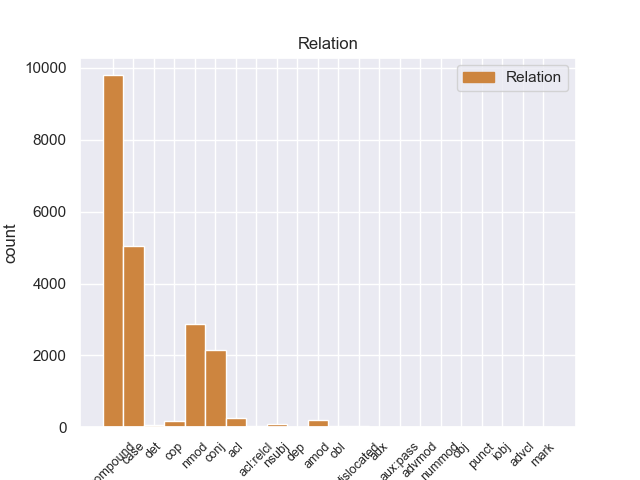
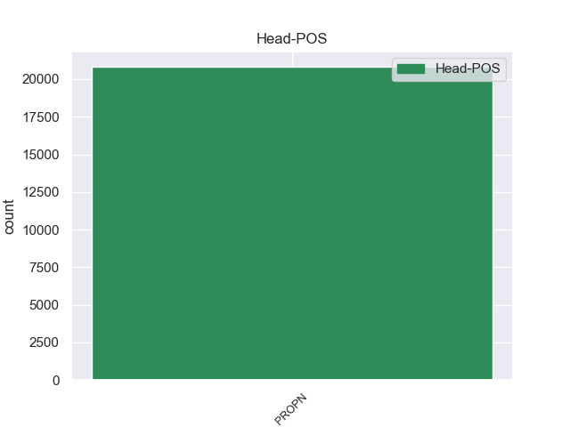
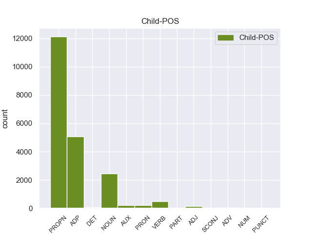

Distribution of features within this leaf



Agreement Rules sorted by frequency.
When the head token is PROPN
1 पाकिस्तानी _ _ _ _ 0 _ _ _
2 दैनिक _ _ _ _ 0 _ _ _
3 ' _ _ _ _ 0 _ _ _
4 डॉन _ _ _ _ 0 _ _ _
5 ' _ _ _ _ 0 _ _ _
6 की _ _ _ _ 0 _ _ _
7 रिपोर्ट _ _ _ _ 0 _ _ _
8 के _ _ _ _ 0 _ _ _
9 मुताबिक _ _ _ _ 0 _ _ _
10 अमेरिका _ _ _ _ 0 _ _ _
11 द्वारा _ _ _ _ 0 _ _ _
12 पाकिस्तान _ _ _ _ 0 _ _ _
13 को _ _ _ _ 0 _ _ _
14 गैर _ _ _ _ 0 _ _ _
15 नाटो _ _ _ _ 0 _ _ _
16 सहयोगी _ _ _ _ 0 _ _ _
17 का _ _ _ _ 0 _ _ _
18 दर्जा _ _ _ _ 0 _ _ _
19 दिए _ _ _ _ 0 _ _ _
20 जाने _ _ _ _ 0 _ _ _
21 के _ _ _ _ 0 _ _ _
22 बावजूद _ _ _ _ 0 _ _ _
23 वहां _ _ _ _ 0 _ _ _
24 भारत भारत PROPN NNP Case=Acc|Gender=Masc|Number=Sing|Person=3 0 _ _ _
25 के का ADP PSP AdpType=Post|Case=Acc|Gender=Masc|Number=Sing 24 case _ ChunkId=NP9|ChunkType=child|Translit=ke
26 प्रधानमंत्री _ _ _ _ 0 _ _ _
27 को _ _ _ _ 0 _ _ _
28 ज्यादा _ _ _ _ 0 _ _ _
29 एहमियत _ _ _ _ 0 _ _ _
30 दिया _ _ _ _ 0 _ _ _
31 जाना _ _ _ _ 0 _ _ _
32 पाकिस्तान _ _ _ _ 0 _ _ _
33 को _ _ _ _ 0 _ _ _
34 खटक _ _ _ _ 0 _ _ _
35 सकता _ _ _ _ 0 _ _ _
36 था _ _ _ _ 0 _ _ _
37 । _ _ _ _ 0 _ _ _
Disagree Examples:
1 दूसरा _ _ _ _ 0 _ _ _
2 अहंकार _ _ _ _ 0 _ _ _
3 , _ _ _ _ 0 _ _ _
4 तीसरापरमाणु _ _ _ _ 0 _ _ _
5 , _ _ _ _ 0 _ _ _
6 चौथा _ _ _ _ 0 _ _ _
7 जगत् _ _ _ _ 0 _ _ _
8 होता _ _ _ _ 0 _ _ _
9 है _ _ _ _ 0 _ _ _
10 . _ _ _ _ 0 _ _ _
11 वैकारिक _ _ _ _ 0 _ _ _
12 सर्ग _ _ _ _ 0 _ _ _
13 में _ _ _ _ 0 _ _ _
14 जो _ _ _ _ 0 _ _ _
15 कुछ _ _ _ _ 0 _ _ _
16 है _ _ _ _ 0 _ _ _
17 , _ _ _ _ 0 _ _ _
18 उसका _ _ _ _ 0 _ _ _
19 मूल _ _ _ _ 0 _ _ _
20 स्थूल _ _ _ _ 0 _ _ _
21 - _ _ _ _ 0 _ _ _
22 भूतहै _ _ _ _ 0 _ _ _
23 , _ _ _ _ 0 _ _ _
24 और _ _ _ _ 0 _ _ _
25 स्थूल _ _ _ _ 0 _ _ _
26 - _ _ _ _ 0 _ _ _
27 भूत _ _ _ _ 0 _ _ _
28 का _ _ _ _ 0 _ _ _
29 मूल _ _ _ _ 0 _ _ _
30 सूक्ष्म _ _ _ _ 0 _ _ _
31 - _ _ _ _ 0 _ _ _
32 भूत _ _ _ _ 0 _ _ _
33 है _ _ _ _ 0 _ _ _
34 . _ _ _ _ 0 _ _ _
35 सूक्ष्म _ _ _ _ 0 _ _ _
36 - _ _ _ _ 0 _ _ _
37 भूत _ _ _ _ 0 _ _ _
38 का _ _ _ _ 0 _ _ _
39 मूल _ _ _ _ 0 _ _ _
40 अहं _ _ _ _ 0 _ _ _
41 - _ _ _ _ 0 _ _ _
42 तत्त्वहै _ _ _ _ 0 _ _ _
43 , _ _ _ _ 0 _ _ _
44 अहं _ _ _ _ 0 _ _ _
45 - _ _ _ _ 0 _ _ _
46 तत्व _ _ _ _ 0 _ _ _
47 का _ _ _ _ 0 _ _ _
48 महत्तत्व _ _ _ _ 0 _ _ _
49 और _ _ _ _ 0 _ _ _
50 महत्तत्त्व _ _ _ _ 0 _ _ _
51 का _ _ _ _ 0 _ _ _
52 मूल _ _ _ _ 0 _ _ _
53 वही _ _ _ _ 0 _ _ _
54 प्रकृति _ _ _ _ 0 _ _ _
55 है _ _ _ _ 0 _ _ _
56 . _ _ _ _ 0 _ _ _
57 इस _ _ _ _ 0 _ _ _
58 प्रकारजगत् _ _ _ _ 0 _ _ _
59 की _ _ _ _ 0 _ _ _
60 अव्यक्त _ _ _ _ 0 _ _ _
61 अवस्था _ _ _ _ 0 _ _ _
62 प्रकृति _ _ _ _ 0 _ _ _
63 और _ _ _ _ 0 _ _ _
64 प्रकृति _ _ _ _ 0 _ _ _
65 की _ _ _ _ 0 _ _ _
66 व्यक्तावस्था _ _ _ _ 0 _ _ _
67 जगत् जगत् PROPN NNPC Case=Nom|Gender=Masc|Number=Sing|Person=3 0 _ _ _
68 हैं है AUX VM Mood=Ind|Number=Plur|Person=3|Tense=Pres|VerbForm=Fin|Voice=Act 67 cop _ _
69 . _ _ _ _ 0 _ _ _
70 एक _ _ _ _ 0 _ _ _
71 - _ _ _ _ 0 _ _ _
72 एकतत्त्व _ _ _ _ 0 _ _ _
73 को _ _ _ _ 0 _ _ _
74 जानने _ _ _ _ 0 _ _ _
75 के _ _ _ _ 0 _ _ _
76 जानने _ _ _ _ 0 _ _ _
77 के _ _ _ _ 0 _ _ _
78 लिए _ _ _ _ 0 _ _ _
79 मनुष्य _ _ _ _ 0 _ _ _
80 - _ _ _ _ 0 _ _ _
81 शरीर _ _ _ _ 0 _ _ _
82 में _ _ _ _ 0 _ _ _
83 एक _ _ _ _ 0 _ _ _
84 - _ _ _ _ 0 _ _ _
85 एक _ _ _ _ 0 _ _ _
86 स्वतन्त्र _ _ _ _ 0 _ _ _
87 इंद्रिय _ _ _ _ 0 _ _ _
88 है _ _ _ _ 0 _ _ _
89 . _ _ _ _ 0 _ _ _
90 तत्वों _ _ _ _ 0 _ _ _
91 के _ _ _ _ 0 _ _ _
92 संयोग _ _ _ _ 0 _ _ _
93 से _ _ _ _ 0 _ _ _
94 इंद्रियों _ _ _ _ 0 _ _ _
95 में _ _ _ _ 0 _ _ _
96 जो _ _ _ _ 0 _ _ _
97 विशेष _ _ _ _ 0 _ _ _
98 - _ _ _ _ 0 _ _ _
99 विशेष _ _ _ _ 0 _ _ _
100 स्पंदन _ _ _ _ 0 _ _ _
101 उत्पन्न _ _ _ _ 0 _ _ _
102 होते _ _ _ _ 0 _ _ _
103 हैं _ _ _ _ 0 _ _ _
104 , _ _ _ _ 0 _ _ _
105 वे _ _ _ _ 0 _ _ _
106 ही _ _ _ _ 0 _ _ _
107 क्रमशः _ _ _ _ 0 _ _ _
108 शब्द _ _ _ _ 0 _ _ _
109 , _ _ _ _ 0 _ _ _
110 स्पर्श _ _ _ _ 0 _ _ _
111 , _ _ _ _ 0 _ _ _
112 रूप _ _ _ _ 0 _ _ _
113 , _ _ _ _ 0 _ _ _
114 रस _ _ _ _ 0 _ _ _
115 और _ _ _ _ 0 _ _ _
116 गंध _ _ _ _ 0 _ _ _
117 कहाते _ _ _ _ 0 _ _ _
118 हैं _ _ _ _ 0 _ _ _
119 . _ _ _ _ 0 _ _ _
1 इशारा _ _ _ _ 0 _ _ _
2 साफ _ _ _ _ 0 _ _ _
3 था _ _ _ _ 0 _ _ _
4 , _ _ _ _ 0 _ _ _
5 इसलिए _ _ _ _ 0 _ _ _
6 सिंह _ _ _ _ 0 _ _ _
7 के _ _ _ _ 0 _ _ _
8 पश्चिमी _ _ _ _ 0 _ _ _
9 उत्तरप्रदेश _ _ _ _ 0 _ _ _
10 के _ _ _ _ 0 _ _ _
11 दौरे _ _ _ _ 0 _ _ _
12 केआखिरी _ _ _ _ 0 _ _ _
13 वक्त _ _ _ _ 0 _ _ _
14 पर _ _ _ _ 0 _ _ _
15 हाथ _ _ _ _ 0 _ _ _
16 खींच _ _ _ _ 0 _ _ _
17 लेने _ _ _ _ 0 _ _ _
18 के _ _ _ _ 0 _ _ _
19 बावजूद _ _ _ _ 0 _ _ _
20 अरूण _ _ _ _ 0 _ _ _
21 नेहरू _ _ _ _ 0 _ _ _
22 का _ _ _ _ 0 _ _ _
23 नाम _ _ _ _ 0 _ _ _
24 राजीव _ _ _ _ 0 _ _ _
25 की _ _ _ _ 0 _ _ _
26 हिटलिस्ट _ _ _ _ 0 _ _ _
27 में _ _ _ _ 0 _ _ _
28 आ _ _ _ _ 0 _ _ _
29 गया _ _ _ _ 0 _ _ _
30 . _ _ _ _ 0 _ _ _
31 स्वाभाविक _ _ _ _ 0 _ _ _
32 था _ _ _ _ 0 _ _ _
33 कि _ _ _ _ 0 _ _ _
34 अपने _ _ _ _ 0 _ _ _
35 निकाले _ _ _ _ 0 _ _ _
36 जाने _ _ _ _ 0 _ _ _
37 का _ _ _ _ 0 _ _ _
38 तीनों _ _ _ _ 0 _ _ _
39 नेता _ _ _ _ 0 _ _ _
40 विरोध _ _ _ _ 0 _ _ _
41 करते _ _ _ _ 0 _ _ _
42 . _ _ _ _ 0 _ _ _
43 अरूण _ _ _ _ 0 _ _ _
44 नेहरू _ _ _ _ 0 _ _ _
45 ने _ _ _ _ 0 _ _ _
46 प्रधानमंत्री _ _ _ _ 0 _ _ _
47 को _ _ _ _ 0 _ _ _
48 चुनौती _ _ _ _ 0 _ _ _
49 देने _ _ _ _ 0 _ _ _
50 के _ _ _ _ 0 _ _ _
51 लहजे _ _ _ _ 0 _ _ _
52 में _ _ _ _ 0 _ _ _
53 अपने _ _ _ _ 0 _ _ _
54 छोटे _ _ _ _ 0 _ _ _
55 से _ _ _ _ 0 _ _ _
56 वक्तव्य _ _ _ _ 0 _ _ _
57 में _ _ _ _ 0 _ _ _
58 कहा _ _ _ _ 0 _ _ _
59 कि _ _ _ _ 0 _ _ _
60 अगर _ _ _ _ 0 _ _ _
61 हाई _ _ _ _ 0 _ _ _
62 कमान _ _ _ _ 0 _ _ _
63 का _ _ _ _ 0 _ _ _
64 मकसद _ _ _ _ 0 _ _ _
65 डरा _ _ _ _ 0 _ _ _
66 धमका _ _ _ _ 0 _ _ _
67 कर _ _ _ _ 0 _ _ _
68 कांग्रेस कांग्रेस PROPN NNP Case=Acc|Gender=Fem|Number=Sing|Person=3 0 _ _ _
69 के का ADP PSP AdpType=Post|Case=Acc|Gender=Masc|Number=Plur 68 case _ _
70 विधायकों _ _ _ _ 0 _ _ _
71 और _ _ _ _ 0 _ _ _
72 सांसदों _ _ _ _ 0 _ _ _
73 को _ _ _ _ 0 _ _ _
74 खुलकर _ _ _ _ 0 _ _ _
75 अपनी _ _ _ _ 0 _ _ _
76 राय _ _ _ _ 0 _ _ _
77 जाहिर _ _ _ _ 0 _ _ _
78 करने _ _ _ _ 0 _ _ _
79 से _ _ _ _ 0 _ _ _
80 रोकना _ _ _ _ 0 _ _ _
81 है _ _ _ _ 0 _ _ _
82 तो _ _ _ _ 0 _ _ _
83 उनकी _ _ _ _ 0 _ _ _
84 यह _ _ _ _ 0 _ _ _
85 मंशा _ _ _ _ 0 _ _ _
86 कभी _ _ _ _ 0 _ _ _
87 पूरी _ _ _ _ 0 _ _ _
88 नहीं _ _ _ _ 0 _ _ _
89 होने _ _ _ _ 0 _ _ _
90 दी _ _ _ _ 0 _ _ _
91 जायेगी _ _ _ _ 0 _ _ _
92 , _ _ _ _ 0 _ _ _
93 आरिफ _ _ _ _ 0 _ _ _
94 मोहम्मद _ _ _ _ 0 _ _ _
95 खां _ _ _ _ 0 _ _ _
96 ने _ _ _ _ 0 _ _ _
97 दावा _ _ _ _ 0 _ _ _
98 किया _ _ _ _ 0 _ _ _
99 कि _ _ _ _ 0 _ _ _
100 हम _ _ _ _ 0 _ _ _
101 तो _ _ _ _ 0 _ _ _
102 कांग्रेस _ _ _ _ 0 _ _ _
103 घोषणापत्र _ _ _ _ 0 _ _ _
104 में _ _ _ _ 0 _ _ _
105 दर्ज _ _ _ _ 0 _ _ _
106 नीतियों _ _ _ _ 0 _ _ _
107 का _ _ _ _ 0 _ _ _
108 ही _ _ _ _ 0 _ _ _
109 प्रचार _ _ _ _ 0 _ _ _
110 करते _ _ _ _ 0 _ _ _
111 रहे _ _ _ _ 0 _ _ _
112 हैं _ _ _ _ 0 _ _ _
113 . _ _ _ _ 0 _ _ _
114 इसलिए _ _ _ _ 0 _ _ _
115 पार्टी _ _ _ _ 0 _ _ _
116 विरोधी _ _ _ _ 0 _ _ _
117 गतिविधियों _ _ _ _ 0 _ _ _
118 का _ _ _ _ 0 _ _ _
119 आरोप _ _ _ _ 0 _ _ _
120 एकदम _ _ _ _ 0 _ _ _
121 निराधार _ _ _ _ 0 _ _ _
122 हैं _ _ _ _ 0 _ _ _
123 . _ _ _ _ 0 _ _ _
124 लेकिन _ _ _ _ 0 _ _ _
125 इस _ _ _ _ 0 _ _ _
126 कार्रवाई _ _ _ _ 0 _ _ _
127 से _ _ _ _ 0 _ _ _
128 हमारा _ _ _ _ 0 _ _ _
129 अभियान _ _ _ _ 0 _ _ _
130 रुकेगा _ _ _ _ 0 _ _ _
131 नहीं _ _ _ _ 0 _ _ _
132 . _ _ _ _ 0 _ _ _
133 सांप्रदायिकता _ _ _ _ 0 _ _ _
134 और _ _ _ _ 0 _ _ _
135 उच्च _ _ _ _ 0 _ _ _
136 पदों _ _ _ _ 0 _ _ _
137 पर _ _ _ _ 0 _ _ _
138 भ्रष्टाचार _ _ _ _ 0 _ _ _
139 के _ _ _ _ 0 _ _ _
140 खिलाफ _ _ _ _ 0 _ _ _
141 हमारी _ _ _ _ 0 _ _ _
142 लड़ाई _ _ _ _ 0 _ _ _
143 जारी _ _ _ _ 0 _ _ _
144 रहेगी _ _ _ _ 0 _ _ _
145 . _ _ _ _ 0 _ _ _
146 विद्याचरण _ _ _ _ 0 _ _ _
147 शुक्ल _ _ _ _ 0 _ _ _
148 बोले _ _ _ _ 0 _ _ _
149 , _ _ _ _ 0 _ _ _
150 हम _ _ _ _ 0 _ _ _
151 तो _ _ _ _ 0 _ _ _
152 भ्रष्ट _ _ _ _ 0 _ _ _
153 तत्वों _ _ _ _ 0 _ _ _
154 और _ _ _ _ 0 _ _ _
155 सांप्रदायिकतत्वों _ _ _ _ 0 _ _ _
156 के _ _ _ _ 0 _ _ _
157 खिलाफ _ _ _ _ 0 _ _ _
158 लड़ाई _ _ _ _ 0 _ _ _
159 लड़ _ _ _ _ 0 _ _ _
160 रहे _ _ _ _ 0 _ _ _
161 हैं _ _ _ _ 0 _ _ _
162 . _ _ _ _ 0 _ _ _
163 राजनैतिक _ _ _ _ 0 _ _ _
164 हलकों _ _ _ _ 0 _ _ _
165 में _ _ _ _ 0 _ _ _
166 यह _ _ _ _ 0 _ _ _
167 सवाल _ _ _ _ 0 _ _ _
168 चर्चा _ _ _ _ 0 _ _ _
169 का _ _ _ _ 0 _ _ _
170 विषय _ _ _ _ 0 _ _ _
171 है _ _ _ _ 0 _ _ _
172 कि _ _ _ _ 0 _ _ _
173 आखिर _ _ _ _ 0 _ _ _
174 राजीव _ _ _ _ 0 _ _ _
175 गांधी _ _ _ _ 0 _ _ _
176 ने _ _ _ _ 0 _ _ _
177 अपने _ _ _ _ 0 _ _ _
178 प्रमुख _ _ _ _ 0 _ _ _
179 प्रतिद्वंद्वी _ _ _ _ 0 _ _ _
180 विश्वनाथ _ _ _ _ 0 _ _ _
181 प्रताप _ _ _ _ 0 _ _ _
182 सिंह _ _ _ _ 0 _ _ _
183 को _ _ _ _ 0 _ _ _
184 छोड़कर _ _ _ _ 0 _ _ _
185 अन्य _ _ _ _ 0 _ _ _
186 तीन _ _ _ _ 0 _ _ _
187 विरोधी _ _ _ _ 0 _ _ _
188 नेताओँ _ _ _ _ 0 _ _ _
189 के _ _ _ _ 0 _ _ _
190 खिलाफ _ _ _ _ 0 _ _ _
191 कार्रवाई _ _ _ _ 0 _ _ _
192 क्यों _ _ _ _ 0 _ _ _
193 की _ _ _ _ 0 _ _ _
194 ? _ _ _ _ 0 _ _ _
1 विदेशमंत्री विदेशमंत्री PROPN NNP Case=Nom|Gender=Masc|Number=Sing|Person=3 0 _ _ _
2 और _ _ _ _ 0 _ _ _
3 पाकिस्तानी _ _ _ _ 0 _ _ _
4 अधिकारियों अधिकारी NOUN NN Case=Acc|Gender=Masc|Number=Plur|Person=3 1 conj _ _
5 से _ _ _ _ 0 _ _ _
6 संपर्क _ _ _ _ 0 _ _ _
7 किया _ _ _ _ 0 _ _ _
8 । _ _ _ _ 0 _ _ _
1 आंध्रप्रदेशके आंध्रप्रदेशका PRON PRP Case=Acc,Gen|Gender=Masc|Number=Plur|Person=3|Poss=Yes|PronType=Prs 2 nmod _ _
2 अग्निगुंडला अग्निगुंडला PROPN NNP Case=Nom|Gender=Masc|Number=Sing|Person=3 0 _ _ _
3 और _ _ _ _ 0 _ _ _
4 अनंतपुर _ _ _ _ 0 _ _ _
5 क्षेत्र _ _ _ _ 0 _ _ _
6 में _ _ _ _ 0 _ _ _
7 तथा _ _ _ _ 0 _ _ _
8 कर्नाटक _ _ _ _ 0 _ _ _
9 के _ _ _ _ 0 _ _ _
10 हसन _ _ _ _ 0 _ _ _
11 और _ _ _ _ 0 _ _ _
12 चित्र _ _ _ _ 0 _ _ _
13 दुर्गक्षेत्र _ _ _ _ 0 _ _ _
14 में _ _ _ _ 0 _ _ _
15 हैं _ _ _ _ 0 _ _ _
16 . _ _ _ _ 0 _ _ _
17 मलं _ _ _ _ 0 _ _ _
18 - _ _ _ _ 0 _ _ _
19 जखंड _ _ _ _ 0 _ _ _
20 ( _ _ _ _ 0 _ _ _
21 मध्यप्रदेश _ _ _ _ 0 _ _ _
22 ) _ _ _ _ 0 _ _ _
23 जितना _ _ _ _ 0 _ _ _
24 ताँबा _ _ _ _ 0 _ _ _
25 कूता _ _ _ _ 0 _ _ _
26 गया _ _ _ _ 0 _ _ _
27 था _ _ _ _ 0 _ _ _
28 अब _ _ _ _ 0 _ _ _
29 उससे _ _ _ _ 0 _ _ _
30 भीअधिक _ _ _ _ 0 _ _ _
31 मिलने _ _ _ _ 0 _ _ _
32 लगा _ _ _ _ 0 _ _ _
33 है _ _ _ _ 0 _ _ _
34 . _ _ _ _ 0 _ _ _
35 इनके _ _ _ _ 0 _ _ _
36 अतिरिक्त _ _ _ _ 0 _ _ _
37 अन्य _ _ _ _ 0 _ _ _
38 जगहों _ _ _ _ 0 _ _ _
39 में _ _ _ _ 0 _ _ _
40 भी _ _ _ _ 0 _ _ _
41 ताँबे _ _ _ _ 0 _ _ _
42 के _ _ _ _ 0 _ _ _
43 भंडार _ _ _ _ 0 _ _ _
44 मिलनेकी _ _ _ _ 0 _ _ _
45 संभावना _ _ _ _ 0 _ _ _
46 है _ _ _ _ 0 _ _ _
47 . _ _ _ _ 0 _ _ _
48 " _ _ _ _ 0 _ _ _
1 तीसरे _ _ _ _ 0 _ _ _
2 , _ _ _ _ 0 _ _ _
3 यदि _ _ _ _ 0 _ _ _
4 जानकारी _ _ _ _ 0 _ _ _
5 बहुत _ _ _ _ 0 _ _ _
6 गहरी _ _ _ _ 0 _ _ _
7 नहीं _ _ _ _ 0 _ _ _
8 होती _ _ _ _ 0 _ _ _
9 तो _ _ _ _ 0 _ _ _
10 प्रश्नावली _ _ _ _ 0 _ _ _
11 विधि _ _ _ _ 0 _ _ _
12 उपयुक्त _ _ _ _ 0 _ _ _
13 पाई _ _ _ _ 0 _ _ _
14 जाती _ _ _ _ 0 _ _ _
15 है _ _ _ _ 0 _ _ _
16 . _ _ _ _ 0 _ _ _
17 दूसरी _ _ _ _ 0 _ _ _
18 ओर _ _ _ _ 0 _ _ _
19 साक्षात्कार _ _ _ _ 0 _ _ _
20 विधि _ _ _ _ 0 _ _ _
21 में _ _ _ _ 0 _ _ _
22 सूचना _ _ _ _ 0 _ _ _
23 की _ _ _ _ 0 _ _ _
24 गहराई _ _ _ _ 0 _ _ _
25 अधिक _ _ _ _ 0 _ _ _
26 होती _ _ _ _ 0 _ _ _
27 है _ _ _ _ 0 _ _ _
28 . _ _ _ _ 0 _ _ _
29 इसका _ _ _ _ 0 _ _ _
30 मुख्यकारण _ _ _ _ 0 _ _ _
31 यह _ _ _ _ 0 _ _ _
32 है _ _ _ _ 0 _ _ _
33 कि _ _ _ _ 0 _ _ _
34 साक्षात्कार _ _ _ _ 0 _ _ _
35 में _ _ _ _ 0 _ _ _
36 अनुसंधानकर्ता _ _ _ _ 0 _ _ _
37 उत्तरदाता _ _ _ _ 0 _ _ _
38 की _ _ _ _ 0 _ _ _
39 प्रेरणा _ _ _ _ 0 _ _ _
40 को _ _ _ _ 0 _ _ _
41 समझसकता _ _ _ _ 0 _ _ _
42 है _ _ _ _ 0 _ _ _
43 और _ _ _ _ 0 _ _ _
44 उससे _ _ _ _ 0 _ _ _
45 बार _ _ _ _ 0 _ _ _
46 - _ _ _ _ 0 _ _ _
47 बार _ _ _ _ 0 _ _ _
48 प्रश्न _ _ _ _ 0 _ _ _
49 करके _ _ _ _ 0 _ _ _
50 उसके _ _ _ _ 0 _ _ _
51 मन _ _ _ _ 0 _ _ _
52 की _ _ _ _ 0 _ _ _
53 बात _ _ _ _ 0 _ _ _
54 निकाल _ _ _ _ 0 _ _ _
55 सकता _ _ _ _ 0 _ _ _
56 है _ _ _ _ 0 _ _ _
57 . _ _ _ _ 0 _ _ _
58 इसप्रकार _ _ _ _ 0 _ _ _
59 गहरी _ _ _ _ 0 _ _ _
60 जानकारी _ _ _ _ 0 _ _ _
61 प्राप्त _ _ _ _ 0 _ _ _
62 करने _ _ _ _ 0 _ _ _
63 के _ _ _ _ 0 _ _ _
64 लिये _ _ _ _ 0 _ _ _
65 साक्षात्कर्ता _ _ _ _ 0 _ _ _
66 को _ _ _ _ 0 _ _ _
67 परिश्रम _ _ _ _ 0 _ _ _
68 करनापड़ता _ _ _ _ 0 _ _ _
69 है _ _ _ _ 0 _ _ _
70 और _ _ _ _ 0 _ _ _
71 उसकी _ _ _ _ 0 _ _ _
72 सहायता _ _ _ _ 0 _ _ _
73 के _ _ _ _ 0 _ _ _
74 बिना _ _ _ _ 0 _ _ _
75 उत्तरदाता _ _ _ _ 0 _ _ _
76 आवश्यक _ _ _ _ 0 _ _ _
77 सूचनायें _ _ _ _ 0 _ _ _
78 नहीं _ _ _ _ 0 _ _ _
79 दे _ _ _ _ 0 _ _ _
80 सकता _ _ _ _ 0 _ _ _
81 . _ _ _ _ 0 _ _ _
82 उदाहरण _ _ _ _ 0 _ _ _
83 के _ _ _ _ 0 _ _ _
84 लिये _ _ _ _ 0 _ _ _
85 कॉलेज कॉलेज PROPN NNP Case=Acc|Gender=Masc|Number=Sing|Person=3 0 _ _ _
86 की का ADP PSP AdpType=Post|Case=Acc|Gender=Fem|Number=Plur 85 case _ _
87 लड़कियों _ _ _ _ 0 _ _ _
88 के _ _ _ _ 0 _ _ _
89 एक _ _ _ _ 0 _ _ _
90 समूह _ _ _ _ 0 _ _ _
91 में _ _ _ _ 0 _ _ _
92 प्रेम _ _ _ _ 0 _ _ _
93 सम्बन्धी _ _ _ _ 0 _ _ _
94 अनुभवोंपर _ _ _ _ 0 _ _ _
95 किये _ _ _ _ 0 _ _ _
96 गये _ _ _ _ 0 _ _ _
97 एक _ _ _ _ 0 _ _ _
98 अनुसंधान _ _ _ _ 0 _ _ _
99 में _ _ _ _ 0 _ _ _
100 यह _ _ _ _ 0 _ _ _
101 पता _ _ _ _ 0 _ _ _
102 लगाना _ _ _ _ 0 _ _ _
103 था _ _ _ _ 0 _ _ _
104 कि _ _ _ _ 0 _ _ _
105 क्या _ _ _ _ 0 _ _ _
106 कोई _ _ _ _ 0 _ _ _
107 लड़की _ _ _ _ 0 _ _ _
108 एक _ _ _ _ 0 _ _ _
109 समय _ _ _ _ 0 _ _ _
110 मेंदो _ _ _ _ 0 _ _ _
111 लड़कों _ _ _ _ 0 _ _ _
112 से _ _ _ _ 0 _ _ _
113 प्रेम _ _ _ _ 0 _ _ _
114 सम्बन्ध _ _ _ _ 0 _ _ _
115 रखती _ _ _ _ 0 _ _ _
116 रही _ _ _ _ 0 _ _ _
117 है _ _ _ _ 0 _ _ _
118 . _ _ _ _ 0 _ _ _
119 प्रश्नावली _ _ _ _ 0 _ _ _
120 विधि _ _ _ _ 0 _ _ _
121 में _ _ _ _ 0 _ _ _
122 इस _ _ _ _ 0 _ _ _
123 प्रकार _ _ _ _ 0 _ _ _
124 काउत्तर _ _ _ _ 0 _ _ _
125 नहीं _ _ _ _ 0 _ _ _
126 में _ _ _ _ 0 _ _ _
127 दिया _ _ _ _ 0 _ _ _
128 जाता _ _ _ _ 0 _ _ _
129 है _ _ _ _ 0 _ _ _
130 किन्तु _ _ _ _ 0 _ _ _
131 जब _ _ _ _ 0 _ _ _
132 साक्षात्कार _ _ _ _ 0 _ _ _
133 में _ _ _ _ 0 _ _ _
134 यह _ _ _ _ 0 _ _ _
135 प्रश्न _ _ _ _ 0 _ _ _
136 उपस्थितकिया _ _ _ _ 0 _ _ _
137 जाता _ _ _ _ 0 _ _ _
138 है _ _ _ _ 0 _ _ _
139 और _ _ _ _ 0 _ _ _
140 उसके _ _ _ _ 0 _ _ _
141 उत्तर _ _ _ _ 0 _ _ _
142 में _ _ _ _ 0 _ _ _
143 लड़की _ _ _ _ 0 _ _ _
144 नहीं _ _ _ _ 0 _ _ _
145 कहती _ _ _ _ 0 _ _ _
146 है _ _ _ _ 0 _ _ _
147 तो _ _ _ _ 0 _ _ _
148 साक्षात्कारकर्तातुरन्त _ _ _ _ 0 _ _ _
149 प्रश्न _ _ _ _ 0 _ _ _
150 करता _ _ _ _ 0 _ _ _
151 है _ _ _ _ 0 _ _ _
152 क्या _ _ _ _ 0 _ _ _
153 कभी _ _ _ _ 0 _ _ _
154 नहीं _ _ _ _ 0 _ _ _
155 ? _ _ _ _ 0 _ _ _